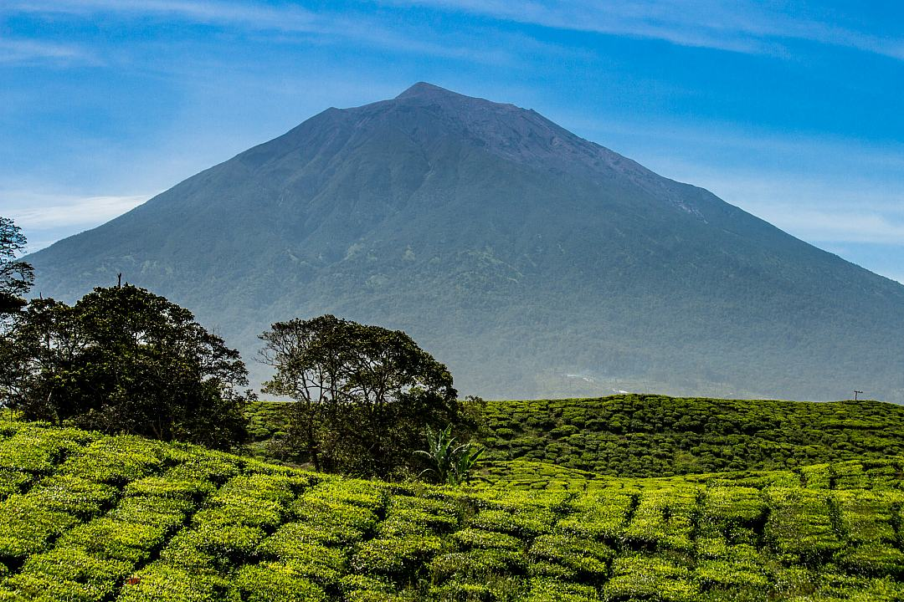
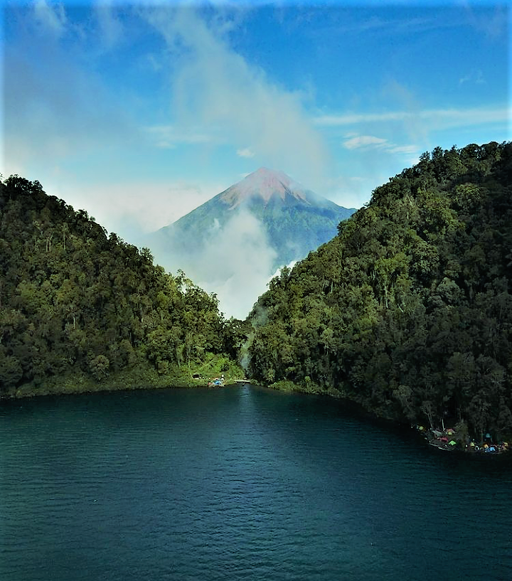
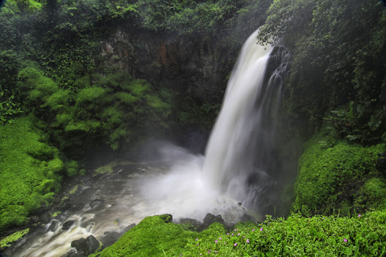

TEMPAT WISATA
 |
Danau kaco adalah tempat wisata yang ada di kerinci lebih tepatnya di Lempur danau, untuk menuju ke lokasi kita perlu menempuh perjalanan selama 5 jam.Dalam perjalanan kita akan melewati rimba yang masih sangat alami belum ada jalan untuk kendaraan bermotor |
|  |
Gunung Kerinci adalah gunung merapi yang masih aktif di Indonesia. Gunung Kerinci juga merupakan gunung aktif yang paling tinggi di Indonesia. Di kaki Gunung Kerinci terdapat juga kebun teh terbesar di Indonesia. |
|  |
Danau Gunung Tujuh yang terletak di Desa Pelompek, Kecamatan Kayu Aro juga menjadi destinasi objek wisata Kabupaten Kerinci. Danau Gunung Tujuh ini memiliki ketinggian 1.950 m dari permukaan laut (dpl). Danau Gunung Tujuh tercatat juga sebagai danau tertinggi di Asia Tenggara. |
|  |
Air terjun Telun Berasap menyuguhkan pemandangan yang sangat indah, dengan debit air yang sangat deras sehingga membentuk percikan air yang lembut mirip seperti asap putih atau dikenal juga dengan kabut air. |